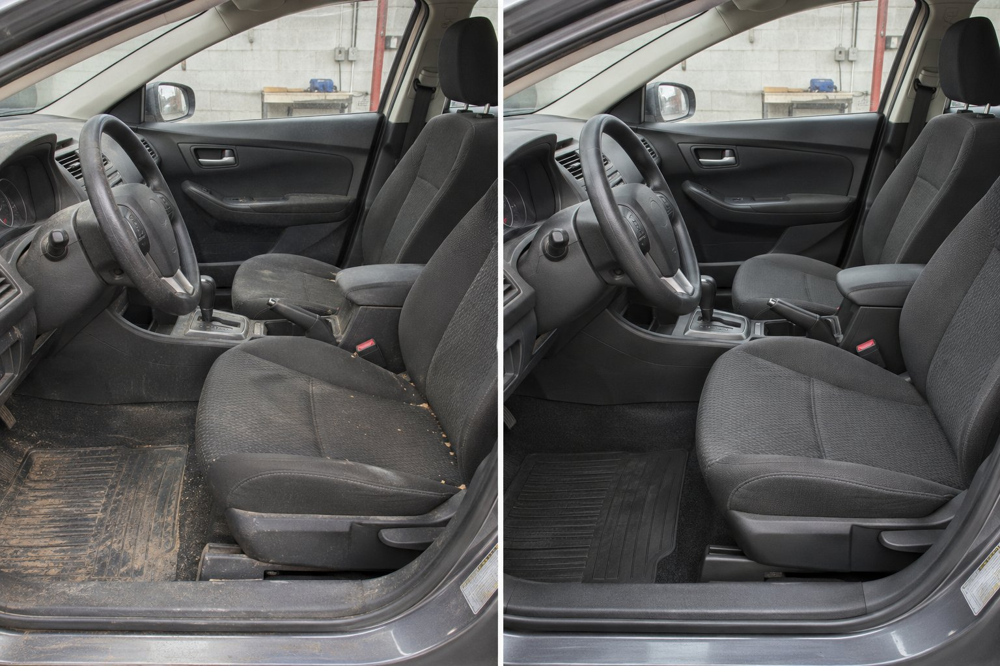
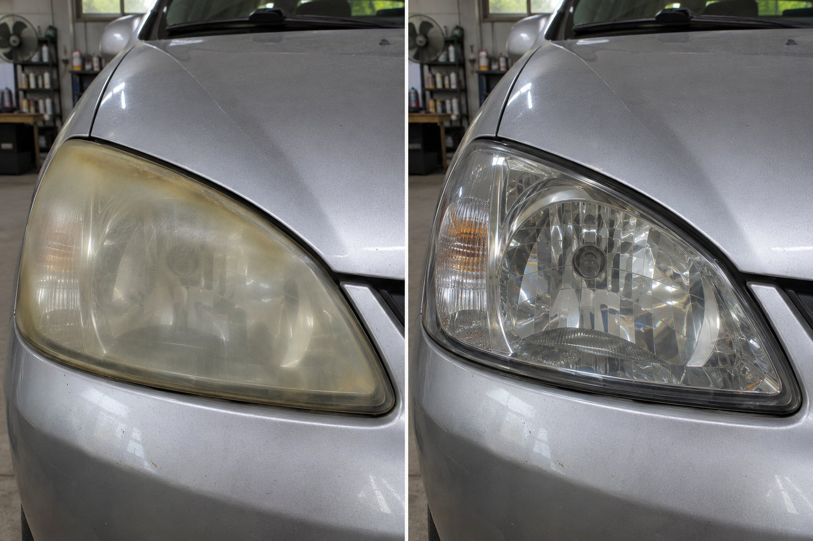
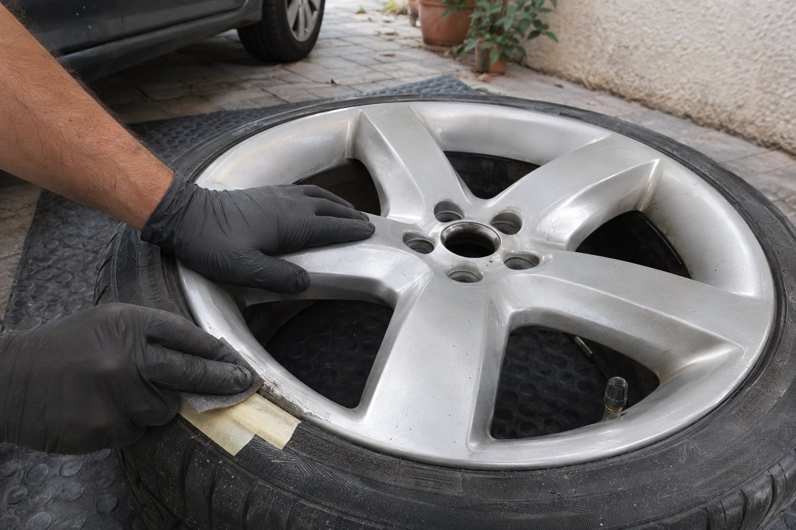

Trabajos reales
Así quedan.
Fotos de trabajos hechos por mí.
AntesDespués

AntesDespués

AntesDespués



Precio cerrado
Pídeme precio por WhatsApp.
Mándame unas fotos del coche o la moto y te digo el precio antes de ir. Sin sorpresas.
- Zona
- Alcoi, Cocentaina y Muro sin recargo. Hasta 30 minutos de Alcoi.
- Horario
- De lunes a viernes.
- Cómo trabajo
- Voy a tu garaje, plaza o puerta con todo el equipo. Lo hago yo, Dani.